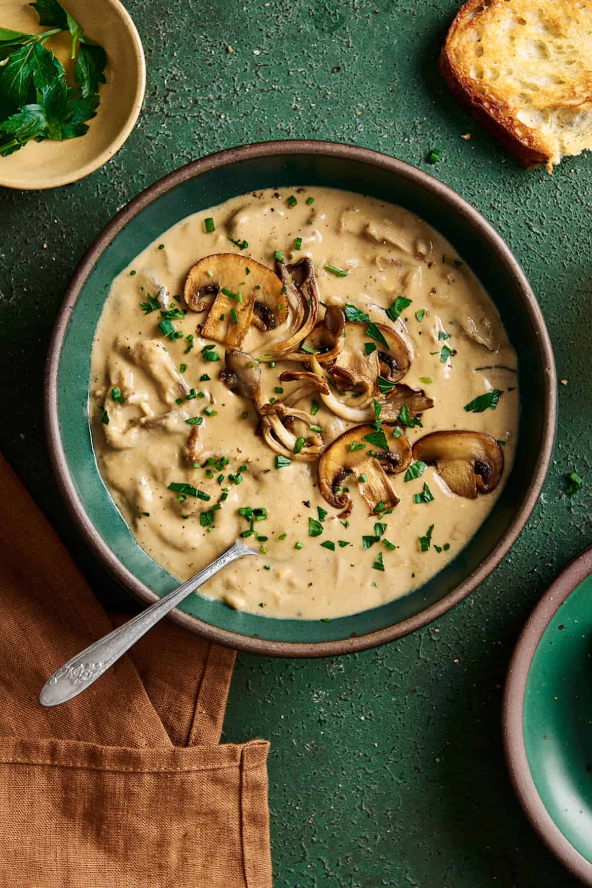

Home Page
Mushroom Soup

Mushroom soup is a simple type of soup where a basic roux is thinned with cream or milk and then mushrooms and/or mushroom broth are added. It is well known in North America as a common type of condensed canned soup. Cream of mushroom soup is often used as a base ingredient in casseroles and comfort foods. This use is similar to that of a mushroom flavored gravy.
Ingredients
- 1/4 cup butter
- 1 onion, chopped
- 1 pound fresh mushrooms, sliced
- 2 cups chicken broth
- 1 cup milk
- 1/2 cup all-purpose flour
- 1 teaspoon salt
- 1/4 teaspoon ground black pepper
- 1/4 teaspoon dried thyme
- 1/2 cup sour cream
Directions
- Melt the butter in a large pot over medium heat. Saute the onion in the butter for 5 minutes. Add the mushrooms and saute for 5 more
minutes. Stir in the chicken broth and milk, and reduce heat to low. In a separate small bowl, mix the flour, salt, pepper, and thyme with a fork. Pour this into the soup and stir well, making sure the flour doesn't clump. Simmer for 15 minutes, stirring occasionally.
- Finally, stir in the sour cream. Mix together and allow to heat through over low heat, about 3 to 5 minutes. Do not boil. Serve immediately.
Enjoy your delicious mushroom soup!